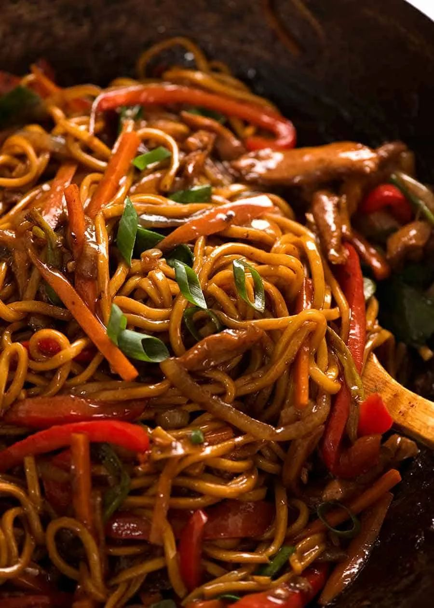

Pork Lo Mein

- Meal
- Dinner
- Serves
- 6
- Protein
- pork
- Cook
- stovetop · 25 min active / 30 min total · easy
- Make-ahead / leftovers
- no / yes
- Mediterranean
- no
- WW tier
- moderate
- Status
- Trying out (probation)
RecipeTin Eats' takeout lo mein — thin-sliced protein, carrots, bell pepper, and green onions tossed with egg noodles in a dark-soy sauce, all in a few minutes once the wok is hot. Nagi writes it for "chicken or other protein"; we use lean pork to fill the Asian-pork gap. Two batches for six.
Ingredients
Sauce
- 1/2 cup water
- 2 Tbsp + 2 tsp cornstarch
- 1/4 cup dark soy sauce (or 1/4 cup regular soy + 1 tsp molasses)
- 1/4 cup regular soy sauce
- 2 Tbsp mirin or dry sherry (omit the sugar if using mirin)
- 2 tsp sugar
- 1 tsp toasted sesame oil
- 1/2 tsp white or black pepper
Stir-fry (cook in two batches)
- 3 Tbsp vegetable or peanut oil
- 4 garlic cloves, finely minced
- 1 onion, finely sliced
- 1.25 lb pork tenderloin or boneless pork chops, sliced 1/5 inch thick
- 4 medium carrots, cut into thin batons
- 2 large red bell peppers, sliced
- 12 green onions, cut into 2-inch lengths
- 2 lb fresh lo mein / egg noodles (or 1 lb dried lo mein or spaghetti, cooked per package)
- Sliced green onion to garnish
Method
- Mix cornstarch into the dark soy until smooth, then the rest of the sauce ingredients (except the water). Toss 4 tsp of the sauce with the pork.
- Prepare the noodles per the package; drain.
- Work in two batches (half of everything per batch): Heat half the oil in a wok or large heavy skillet over high until smoking. Add half the onion and garlic; 30 seconds.
- Add half the pork; stir until it turns white outside, ~1 minute. Add half the carrot and pepper; cook 2 minutes until the pork is done.
- Add half the noodles, half the sauce, and 1/4 cup water. Toss with two wooden spoons 30 seconds. Add half the green onions; toss 1 minute until glossy.
- Repeat for batch two. Serve right away.
Notes
- Doubled from RecipeTin's serves-3 (10 oz protein / 1 lb fresh noodles). A home stove can't stir-fry this volume at once — two batches, or the noodles steam and go gummy.
- Protein is the source's "chicken or other protein" slot; pork tenderloin is lean and cheap in twin packs. Chicken works the same way if pork is capped out this week.
- Dark soy is what makes it look like takeout; regular soy + a little molasses is the no-specialty sub.
- Not Inside-Out Egg Rolls (ground pork + slaw, no noodles) or Chicken or Steak Ramen (broth).
- Pork counts toward the ≤2 red-meat cap. Mediterranean ✗ (refined noodles, neutral oil). moderate.